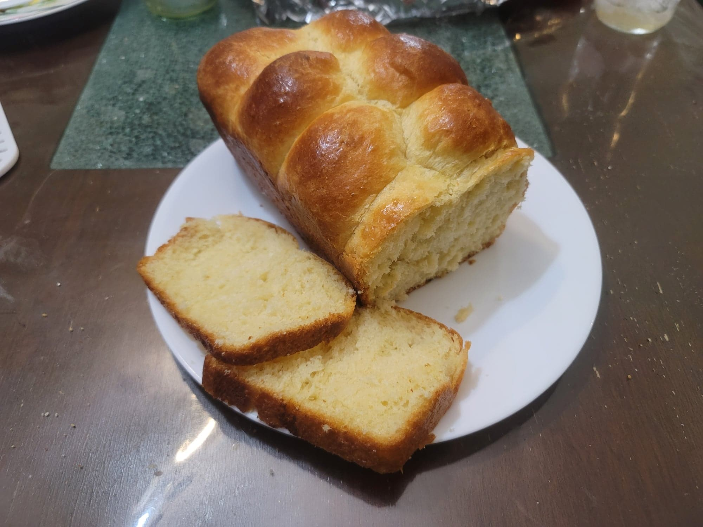

Brioche

Ingredients:
- 1/2 cup Warm milk, about 105 degrees Fahrenheit
- 9 g Active dry yeast
- 2 tsp Honey
- 5 Eggs + 1 Egg yolk
- 2 tsp Vanilla
- 60 g Sugar
- 500 g Flour
- 10 g Salt
- 250g Butter, about 2 sticks + 2 tbsp, cubed, at room temperature
- 1 Egg yolk + 1 tbsp Water
Instructions:
- Day 1:
- Whisk together the warm milk, yeast, and honey. Let rest for about 10 minutes for the yeast to activate.
- Whisk in the eggs and vanilla until homogenous.
- Add in the flour, sugar, and salt and mix with either your hands or with a stand mixer. Knead for 5 minutes with a stand mixer or at least double that if by hand.
- Add in about 1/4th of the butter and knead until fully incorporated, about 2-3 minutes by stand mixer or at least twice that by hand. Then repeat that process 3 more times for the remaining 1/4ths of the butter.
- Once the butter is incorporated, knead the dough until it no longer sticks to the bowl and it passes the window pane test. This will take 5-15 minutes on high speed in a stand mixer, 20-30 minutes on low speed, or at least an hour or more by hand.
- Place the dough onto a flat working surface. Fold in the edges of the dough into the center and press lightly to seal. Flip the dough over so that it is seam-side down, and then with the heels of your hands shape the dough into a tight ball. Transfer the dough into a covered container and let rise at room temperature until doubled in size.
- Once doubled in size, remove from the container and place back onto the work surface. Degas the dough by pressing down on it with your hands. Then fold in the edges of the dough into the center again. Flip and shape into a tight ball. Transfer back into the container and then place into a fridge. Let chill for at least 8 hours or overnight.
- Day 2:
- Prepare 2 9x5 inch loaf pans by greasing them with butter.
- Remove the dough from the fridge and transfer to a flat work surface. Roll the dough into a log to deflate. Divide the dough into two equal parts using a scale. Then divide each half into another 8 equal parts.
- Roll each portion of dough into a tight ball. Then place them into the loaf pans, either uniformly next to each other in two rows of four or in a zig-zag pattern.
- Cover the loaf pans with plastic wrap. Let rest for at least 2 hours or until doubled in size and almost reaching the tops of the loaf pans.
- When the dough is almost doubled in size, preheat the oven to 325 degrees Fahrenheit.
- Whisk together 1 egg yolk and 1 tbsp water to make an egg wash. Lightly brush the tops of the doughs with the egg wash. Place the loaves in the oven and bake 35-45 minutes, or until the internal temperature is at least 190 degrees Fahrenheit.
- Remove the bread from the oven. Let rest for about 5 minutes in the pan and then remove and transfer to a wire rack to finish cooling. Let cool completely before slicing.